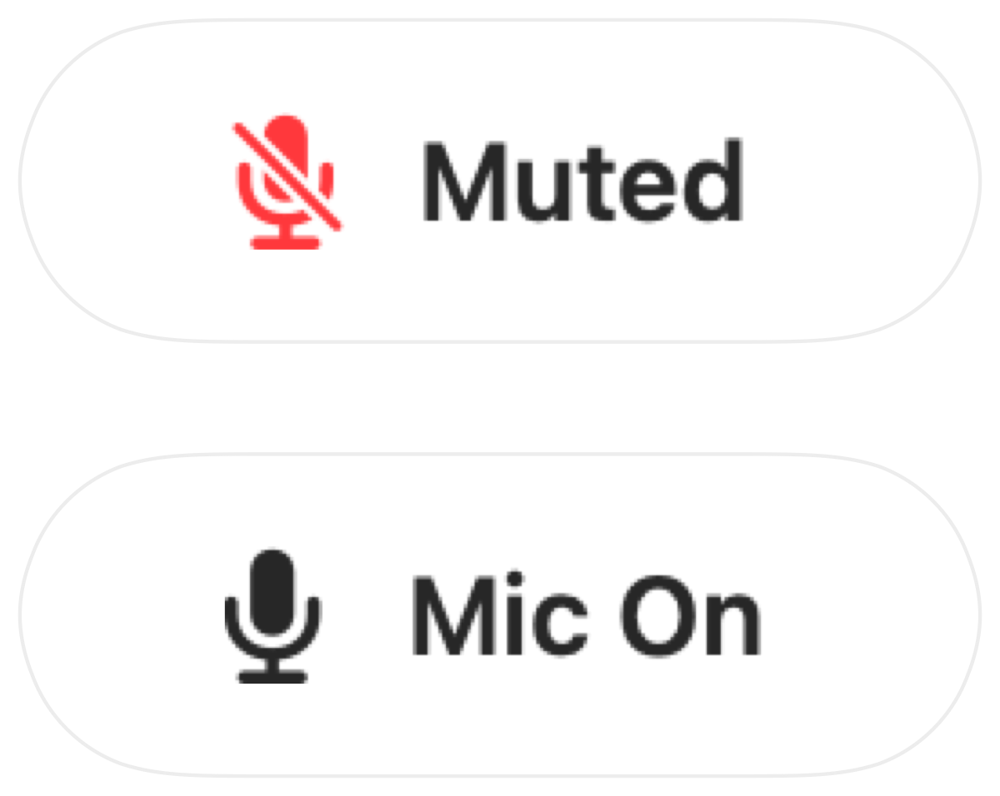

How to mute your microphone on a Mac with a keyboard shortcut
macOS has a key for dictation but none for muting your mic. Every call app has its own shortcut, and each works only while that app is in front.
Muffle adds one shortcut that mutes the microphone itself, in every app at once. The default is Control-Option-M, and you can pick any combination.
Mute with one shortcut
- 1
Install Muffle.
- 2
Press Control-Option-M to mute. The menu bar icon turns red and a small “Muted” confirmation appears.
- 3
Press it again to unmute.
- 4
To change it, open Muffle Settings, click the shortcut and press a new one.

- Hold the shortcut while muted to talk, and let go to mute again.
- Right-click the Muffle menu bar icon to mute instantly with the mouse.
Questions
Does the shortcut work when a call app isn't in front?
Yes. It works from any app, including full-screen apps.
Can I use a single key, like F5?
Yes. Function keys work on their own; other keys need Control, Option or Command.